← Product & Prototyping · Character × Tech
MOFYCH Commission Website
The website for my own commission shop: an “art + web” front end I designed, a queue people can follow, and a paint matcher that finds exact colours.
- Year
- 2026
- Team / role
- Solo — design and system decisions; code built with AI
- Tools
- Figma · drawing app · Google Apps Script · Google Sheets · email
- Status
- live in active development · honeykung.github.io/commission-tag

Problem
People who want a commission need to know when I open, where they are in the queue, and what fabrics and prices are available. For painted pieces I want colours to be exact, not just close — and paints on the market come from many brands with many near-identical shades.
What I decided
- Art + web. I designed the whole site myself in Figma: the clouds and logo are hand-drawn, and I designed the animation myself rather than letting AI choose it.
- A queue people can trust. Tag list and queue on Google Apps Script + Sheets: people tag to get an email when I open, and cancelling a tag must be confirmed by email.
- One search across every brand — otherwise you don’t get the closest colour.
- Data I checked myself. I transcribed brand colour charts myself.
- A clear target. ΔE < 5 as the goal; results are graded match / very close / close.
- Mix only ordinary paints. I removed fluorescent and metallic paints from the 2-paint mix recipes and kept normal base colours.
Result
Live and in use: tag to follow openings, sample work, fabric colours, paint colours, email alerts, a queue sheet, and a customer price estimate and an admin cost calculator. About 300 people have signed up to the tag list, and messages have been sent to customers through the site. The paint matcher covers 1,131 paints from 5 brands (Vallejo, Army Painter, Citadel, AK Interactive and Thai brand Thaitone); mix recipes come in 10% steps you can measure, marked as a guide to test with real paint. The colour maths uses standard formulas (CIEDE2000) written by AI.
Gallery
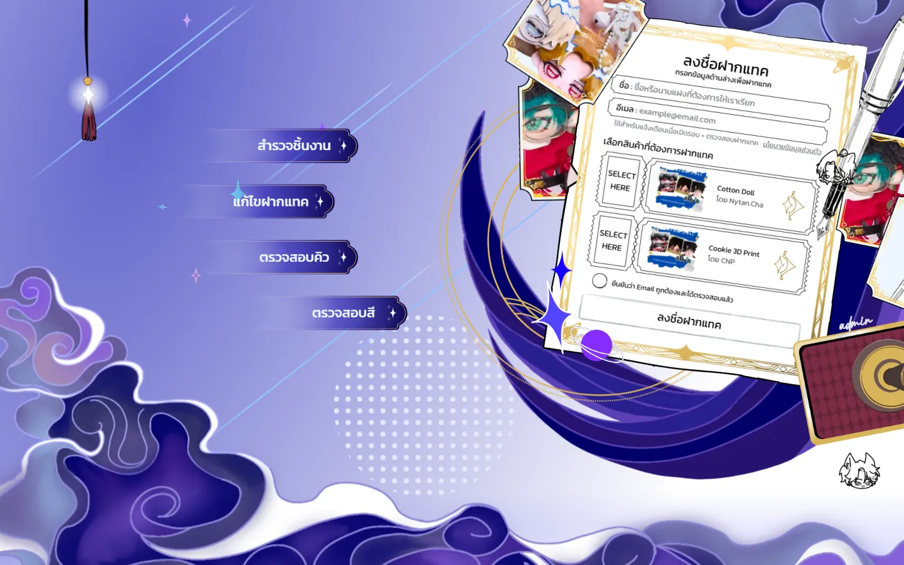
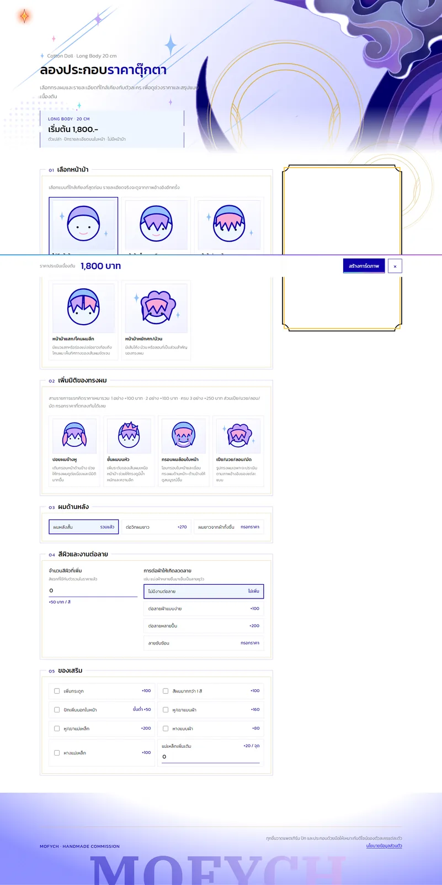
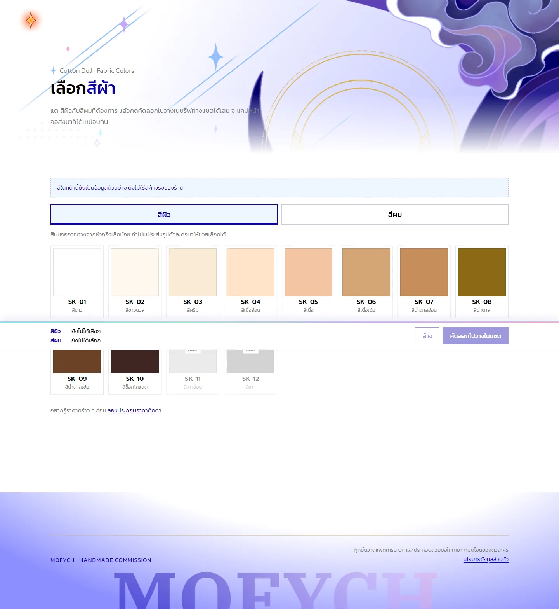
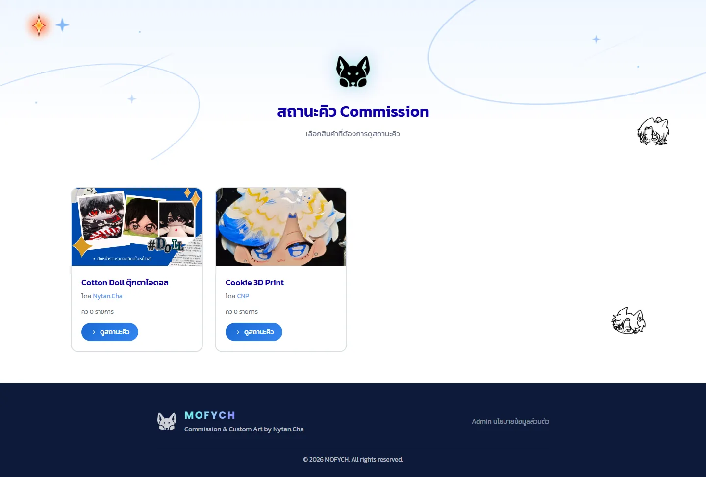
Sketches & process
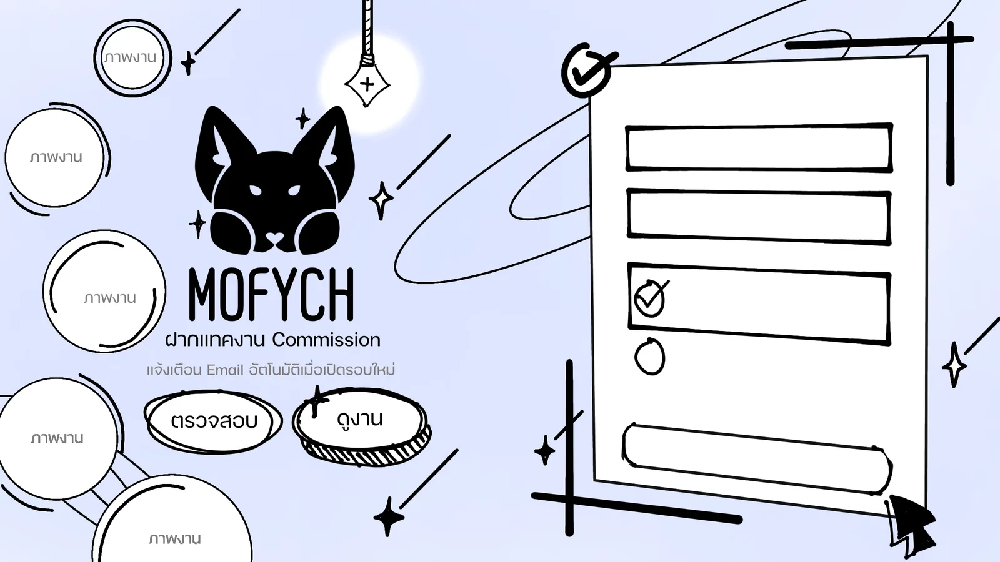
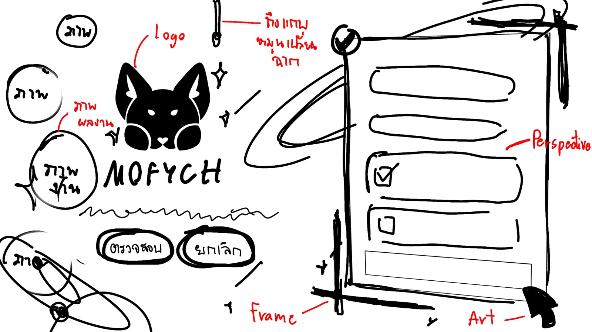
Collector cards and certificate
Collector cards and certificate I designed and sent to print: 4 designs × 4 cards, 90 × 50 mm, printed by a factory in China. I separated the artwork into layers for the holographic foil and for matte vs smooth finishes.
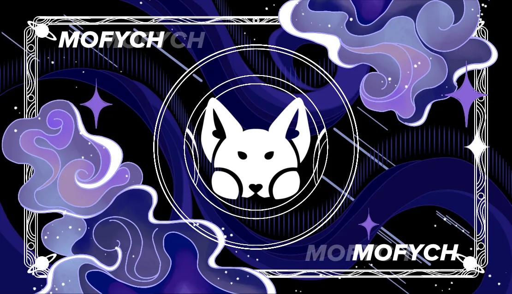
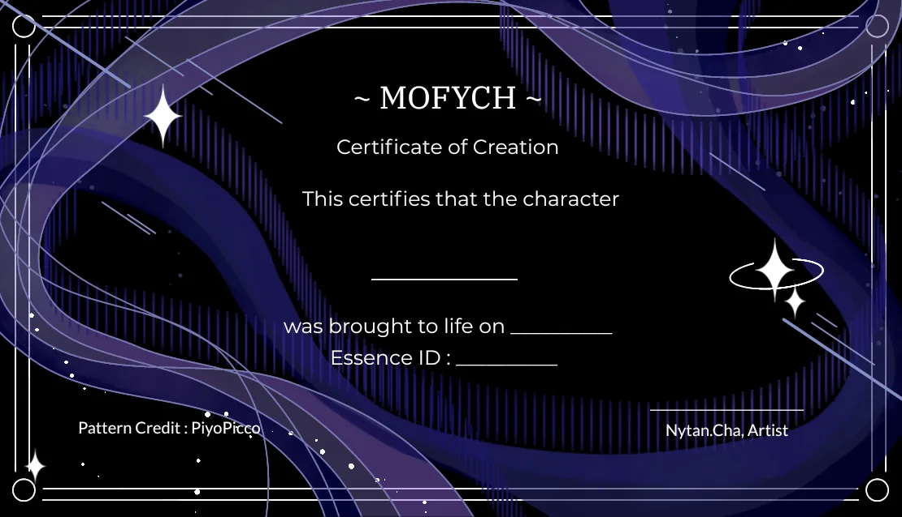
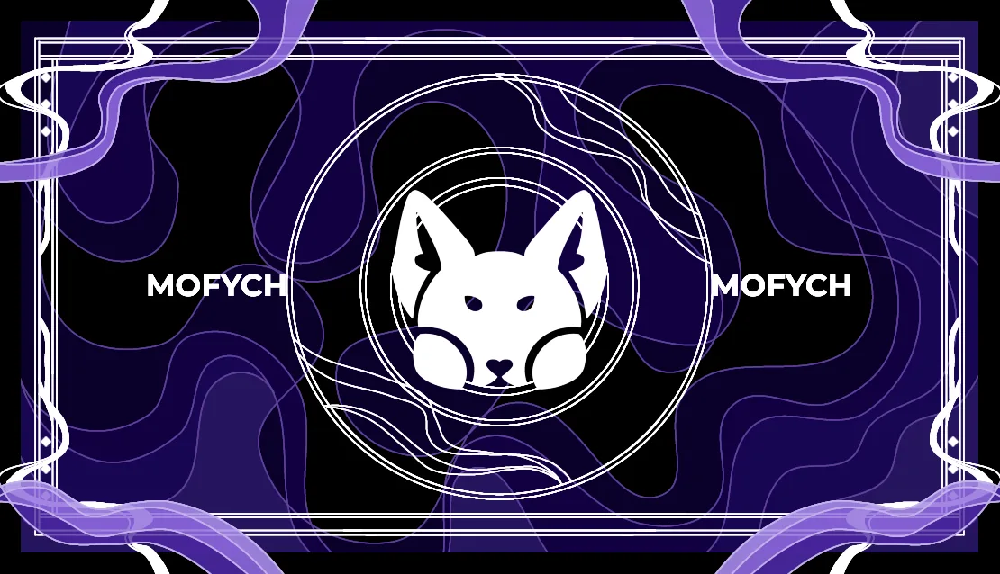
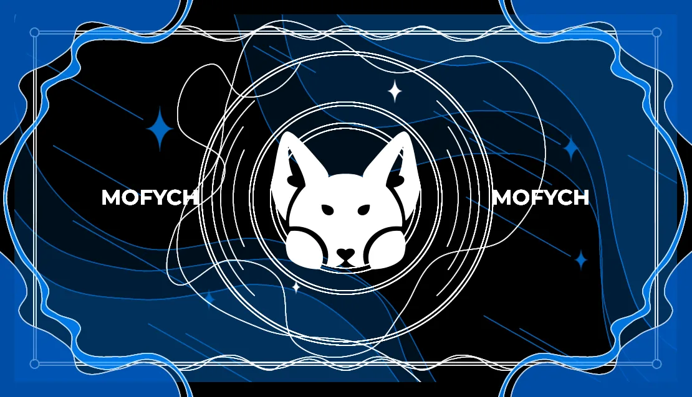
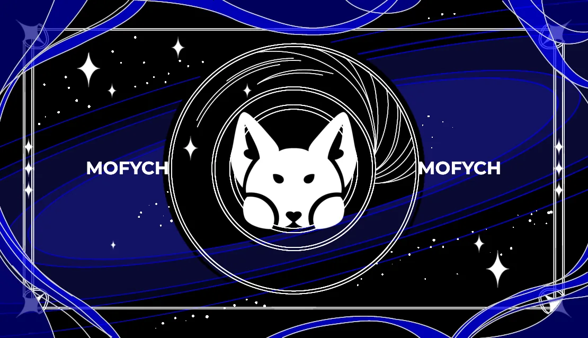
My role vs AI
Me: the whole design — illustration, UI and motion — plus what the queue and paint matcher must do and the standards they must meet. AI: all code, built from my design, including the standard colour-difference and mixing formulas.